HAUXHAUX
SISTEMA DE GESTÃO
Manual do Usuário
Versão 1.0 — Abril 2026
Sumário
- Introdução ao Sistema
- Acesso ao Sistema (Login)
- Dashboard — Painel Principal
- Cadastro de Produtos
- Cadastro de Categorias
- Cadastro de Insumos
- Cadastro de Parceiros
- Controle de Estoque
- Registro de Produção
- Registro de Compras
- Remessas em Consignação
- Devoluções de Consignação
- Fechamentos de Consignação
- Vendas Diretas
- Contas a Receber (Financeiro)
- Portal do Parceiro — Visão Geral
- Portal do Parceiro — Registrar Venda
- Portal do Parceiro — Declarar Consumo
- Portal do Parceiro — Histórico
- Fluxo Operacional Completo
O HAUXHAUX Sistema de Gestão é uma plataforma completa para gerenciamento de produção,
estoque, consignação e financeiro da operação HAUXHAUX. O sistema permite controlar todo o ciclo de vida dos
produtos — desde a compra de insumos, passando pela produção, até a venda via parceiros de consignação ou
vendas diretas para clientes finais.
Principais Módulos
| Módulo |
Função |
| Cadastros |
Produtos, Insumos, Categorias e Parceiros |
| Operação |
Compras de insumos, Produção, Estoque e Vendas Diretas |
| Consignação |
Remessas para parceiros e Devoluções |
| Financeiro |
Fechamentos mensais e Contas a Receber |
Para acessar o sistema, utilize o navegador de internet (Chrome, Firefox ou Edge) e acesse o endereço do
sistema. Você verá a tela de login abaixo:
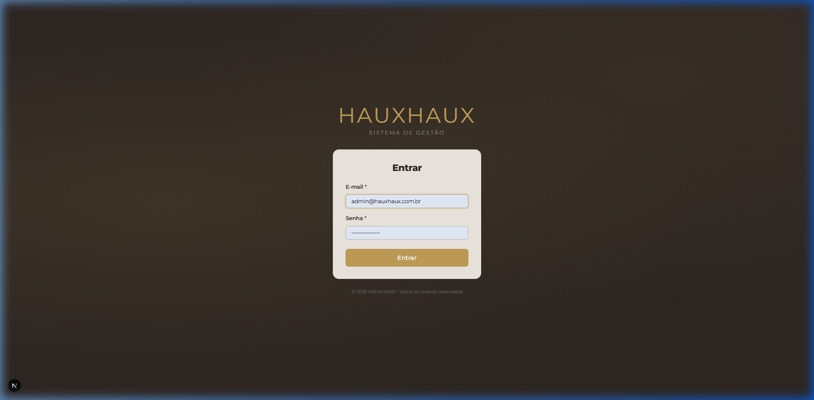
Figura 1 — Tela de Login do Sistema HAUXHAUX
Como fazer login
- Digite seu e-mail no campo "E-mail"
- Digite sua senha no campo "Senha"
- Clique no botão "Entrar"
Caso esqueça sua senha, entre em contato com o administrador do sistema para redefinição.
Nunca compartilhe suas credenciais de acesso com terceiros. Cada usuário possui um login
individual.
O Dashboard é a tela inicial após o login. Ele apresenta uma visão geral da operação com
indicadores-chave, alertas e atalhos rápidos para as principais funcionalidades.
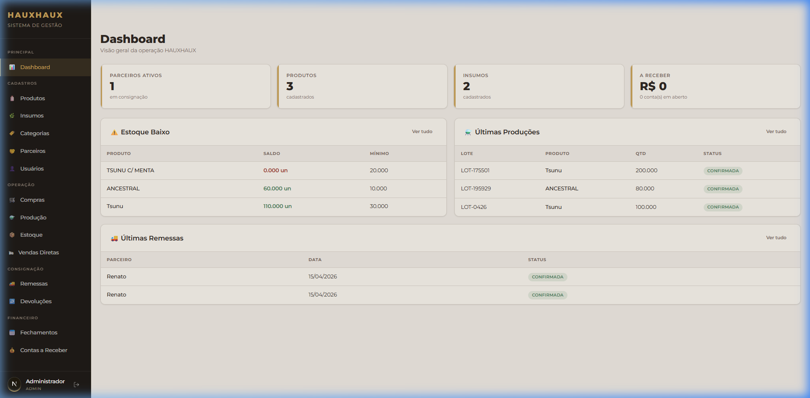
Figura 2 — Dashboard com resumo geral da operação
Cards de Resumo (topo)
| Indicador |
O que mostra |
| Parceiros Ativos |
Quantidade de parceiros com produtos em consignação |
| Produtos |
Total de produtos cadastrados no sistema |
| Insumos |
Total de insumos cadastrados |
| A Receber |
Valor total das contas a receber em aberto (R$) |
Seções do Dashboard
- ⚠️ Estoque Baixo: Lista os produtos cujo saldo de estoque está abaixo do
mínimo configurado. Valores em vermelho indicam estoque
crítico
- 🔬 Últimas Produções: Exibe os lotes de produção mais recentes com quantidade e status
- 🚚 Últimas Remessas: Mostra as remessas de consignação mais recentes enviadas aos
parceiros
Clique em "Ver tudo" em qualquer seção para acessar a página completa com todos os registros.
A tela de Produtos permite cadastrar, editar e gerenciar todos os produtos acabados que
serão vendidos via consignação ou vendas diretas.
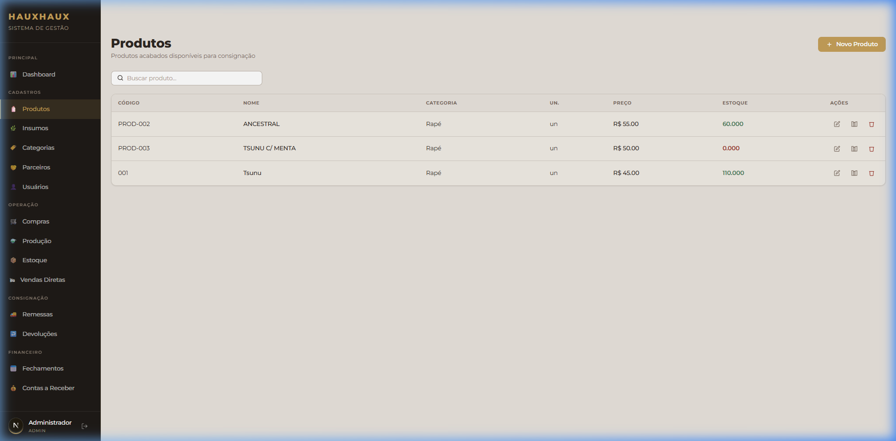
Figura 3 — Lista de produtos cadastrados
Informações da Tabela
| Coluna |
Descrição |
| Código |
Código interno do produto (ex: PROD-002, 001) |
| Nome |
Nome de identificação do produto |
| Categoria |
Classificação do produto (ex: Rapé) |
| Un. |
Unidade de medida (un, g, kg, ml, L) |
| Preço |
Preço de venda sugerido do produto (R$) |
| Estoque |
Saldo atual em estoque. Vermelho = estoque baixo |
| Ações |
Ícones para Editar ✏️, Composição 📋 e Excluir 🗑️ |
Como cadastrar um novo produto
- Clique no botão "+ Novo Produto" (canto superior direito)
- Preencha os campos: Nome, Código, Categoria, Unidade, Preço e Estoque Mínimo
- Clique em "Salvar"
Busca
Use o campo "Buscar produto..." no topo da página para filtrar produtos por nome ou código.
O preço definido aqui é o valor padrão. Ao criar remessas ou vendas diretas,
é possível editar o preço unitário de venda.
As Categorias servem para organizar e classificar os produtos e insumos em grupos. Cada
categoria possui um tipo: PRODUTO ou INSUMO.
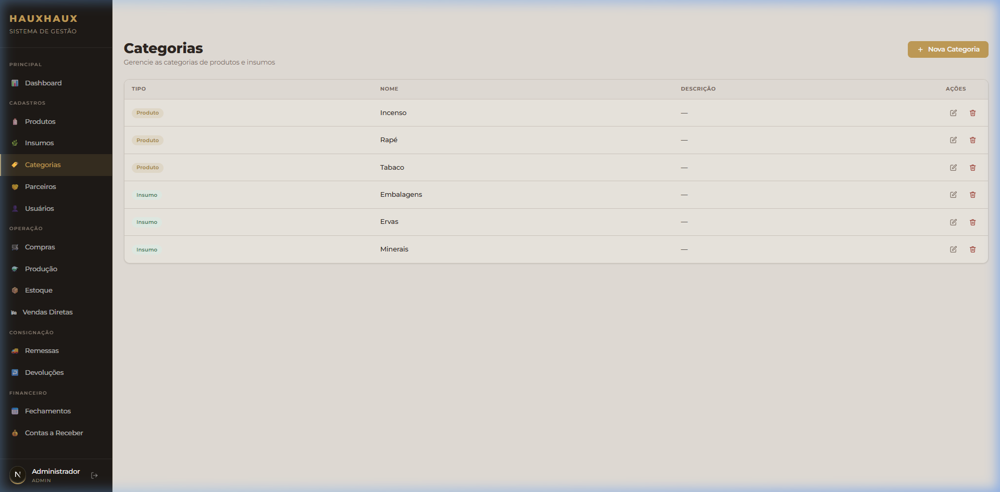
Figura 4 — Gestão de categorias
Como criar uma nova categoria
- Clique no botão "+ Nova Categoria"
- Informe o Nome da categoria
- Selecione o Tipo: PRODUTO ou INSUMO
- Clique em "Salvar"
Crie categorias descritivas (ex: "Rapé", "Tabaco", "Embalagens") para facilitar a filtragem e
relatórios futuros.
Os insumos são as matérias-primas usadas na produção dos produtos acabados. A tela de
Insumos permite cadastrar cada insumo com seu preço de custo e unidade de medida.
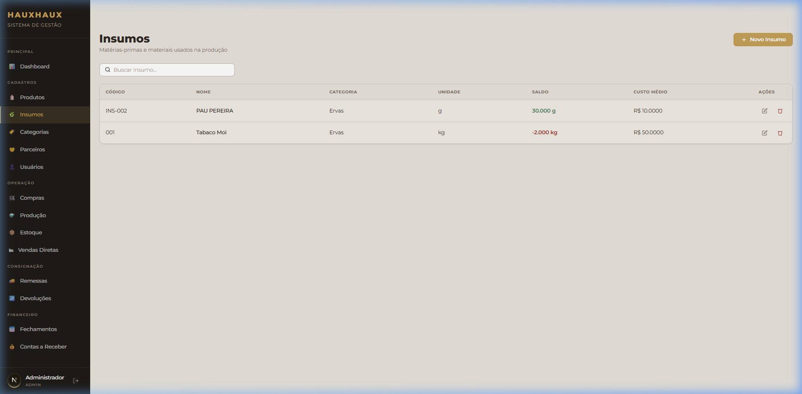
Figura 5 — Lista de insumos cadastrados
Campos do Insumo
- Nome: Nome do insumo (ex: Mapacho, Tsunu)
- Categoria: Classificação (ex: Ervas, Minerais)
- Unidade: Unidade de medida (g, kg, un, ml, L)
- Preço de Custo: Valor unitário de aquisição (R$)
- Estoque Mínimo: Limite abaixo do qual o Dashboard gera alerta
Os Parceiros são as pessoas ou lojas que recebem produtos em consignação para revenda. Cada
parceiro possui uma comissão percentual sobre o valor das vendas.
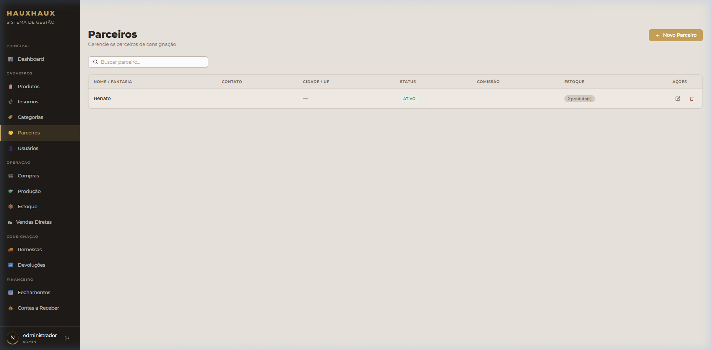
Figura 6 — Lista de parceiros de consignação
Informações da Tabela
| Coluna |
Descrição |
| Nome / Fantasia |
Nome do parceiro ou nome fantasia da loja |
| Contato |
Telefone ou WhatsApp do parceiro |
| Cidade / UF |
Localização do parceiro |
| Status |
ATIVO ou INATIVO |
| Comissão |
Percentual de comissão do parceiro sobre as vendas (%) |
| Estoque |
Quantidade de produtos em consignação com o parceiro |
Como cadastrar um novo parceiro
- Clique em "+ Novo Parceiro"
- Preencha: Nome, Contato, Cidade/UF
- Defina o Percentual de Comissão (ex: 20% significa que o parceiro fica com 20% do valor
da venda)
- Clique em "Salvar"
A comissão deve ser definida no momento do cadastro. Ela será usada automaticamente nos
fechamentos para calcular o valor de repasse à HAUXHAUX.
A tela de Estoque apresenta a visão consolidada de todos os saldos — tanto do estoque
interno (HAUXHAUX) quanto dos produtos que estão com parceiros em consignação.
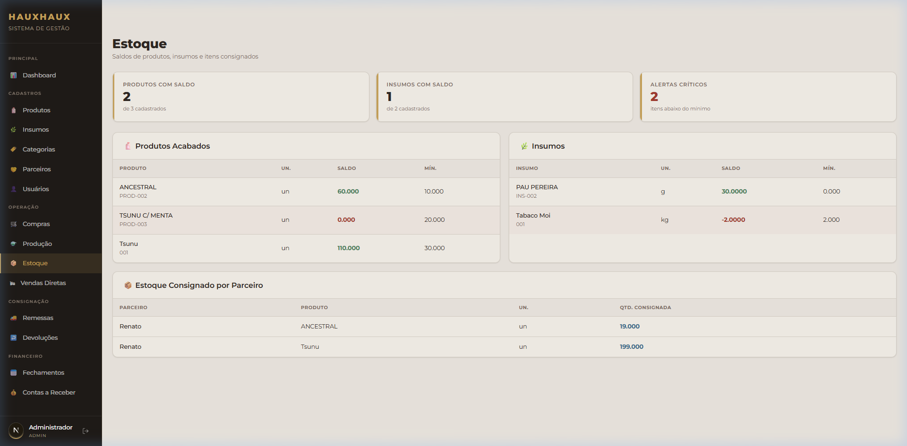
Figura 7 — Controle de estoque consolidado
Movimentações que afetam o estoque
| Operação |
Efeito no Estoque |
| Produção confirmada |
➕ Adiciona ao estoque interno |
| Compra confirmada |
➕ Adiciona insumos ao estoque |
| Remessa para parceiro |
➖ Remove do estoque interno, adiciona ao parceiro |
| Devolução de parceiro |
➕ Retorna ao estoque interno, remove do parceiro |
| Venda direta |
➖ Remove do estoque interno |
| Fechamento (vendas) |
➖ Remove do estoque do parceiro |
O estoque é atualizado automaticamente a cada operação. Não é necessário fazer ajustes manuais
em condições normais.
A tela de Produção permite registrar os lotes de produtos fabricados. Cada lote recebe um
código automático (ex: LOT-175501) e pode ser confirmado para dar entrada no estoque.
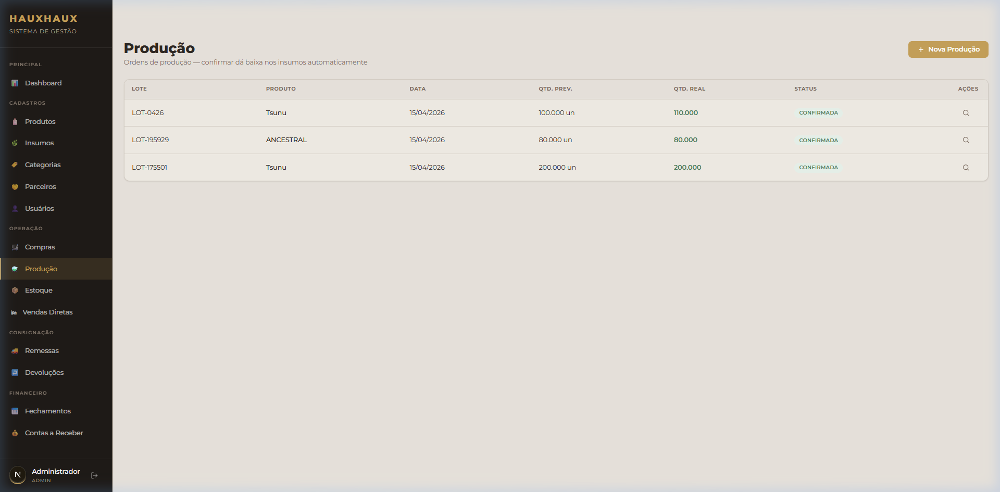
Figura 8 — Registro de lotes de produção
Como registrar uma nova produção
- Clique em "+ Nova Produção"
- Selecione o Produto a ser produzido
- Informe a Quantidade produzida (use os botões + e −
ou digite diretamente)
- Clique em "Salvar" — o lote é criado com status PENDENTE
- Quando a produção for finalizada, clique em "Confirmar" para dar entrada no estoque
Status possíveis
- PENDENTE: Lote registrado mas ainda não confirmado. Estoque NÃO
foi atualizado
- CONFIRMADA: Produção confirmada. Estoque foi incrementado
automaticamente
A tela de Compras permite registrar a aquisição de insumos (matérias-primas). Cada compra
pode conter múltiplos itens e dá entrada automática no estoque de insumos quando confirmada.
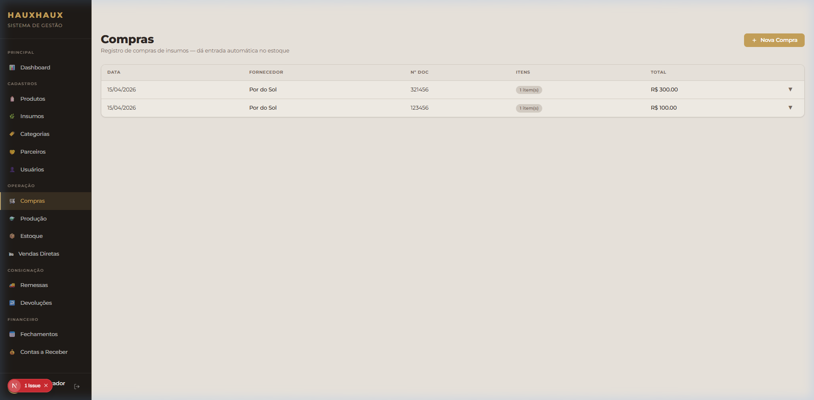
Figura 9 — Registro de compras de insumos
Como registrar uma nova compra
- Clique em "+ Nova Compra"
- Selecione o Insumo a ser comprado
- Informe a Quantidade e o Valor Unitário
- Adicione mais itens se necessário
- Clique em "Salvar" para registrar a compra
O valor unitário informado na compra é usado para cálculo do custo médio dos insumos.
As Remessas representam o envio de produtos para parceiros revendedores. Quando uma remessa
é confirmada, os produtos saem do estoque interno e ficam registrados como estoque do parceiro.
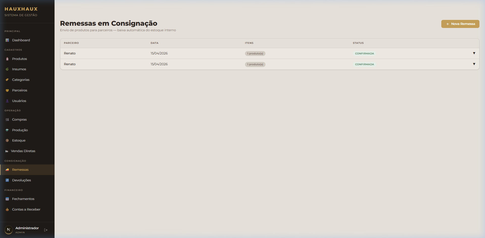
Figura 10 — Remessas de consignação para parceiros
Como criar uma nova remessa
- Clique em "+ Nova Remessa"
- Selecione o Parceiro de destino
- Adicione os Produtos à remessa
- Para cada produto, defina a Quantidade e o Preço de Venda
- Clique em "Salvar" para criar a remessa
- Confirme a remessa para dar baixa no estoque interno
O preço de venda definido na remessa será o mesmo usado no fechamento. Não é possível
alterá-lo depois que a remessa for confirmada.
O valor padrão do produto vem preenchido automaticamente, mas pode ser editado antes de
confirmar a remessa.
Quando um parceiro deseja devolver produtos não vendidos, utiliza-se a tela de Devoluções.
Os produtos devolvidos retornam ao estoque interno da HAUXHAUX.
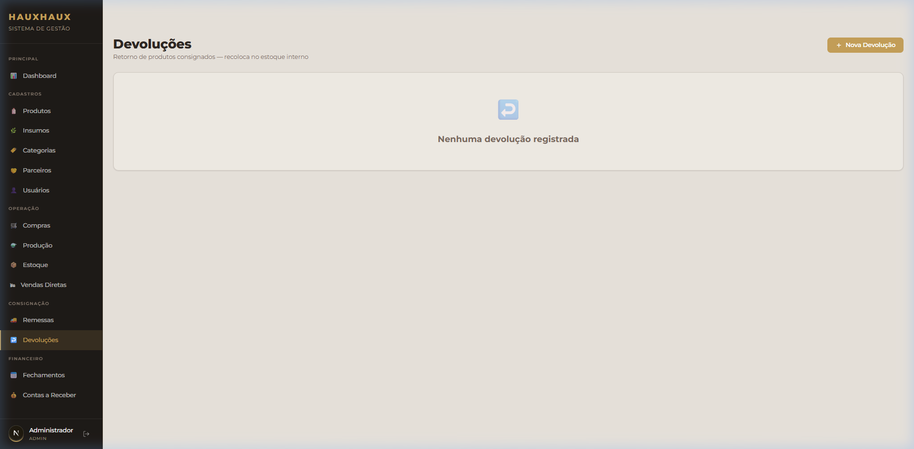
Figura 11 — Registro de devoluções de consignação
Como registrar uma devolução
- Clique em "+ Nova Devolução"
- Selecione o Parceiro que está devolvendo
- Selecione os Produtos a serem devolvidos (apenas produtos que o parceiro possui em
consignação são exibidos)
- Informe a Quantidade devolvida
- Confirme a devolução
A devolução reduz automaticamente o estoque do parceiro e aumenta o estoque interno.
O Fechamento é o processo de contabilizar as vendas de um parceiro. É feito periodicamente
(geralmente mensal) para apurar quantos produtos o parceiro vendeu e calcular os valores de comissão e
repasse.
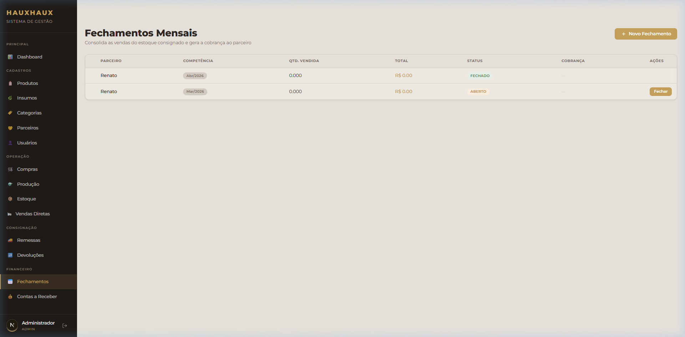
Figura 12 — Fechamentos de consignação
Como fazer um fechamento
- Clique em "+ Novo Fechamento"
- Selecione o Parceiro
- O sistema exibe automaticamente os produtos que o parceiro possui em consignação com os preços
de venda fixos (definidos na remessa)
- Informe a Quantidade Vendida de cada produto
- O sistema calcula automaticamente:
- Valor Total Vendido: soma de (preço × quantidade vendida)
- Comissão do Parceiro: percentual × valor vendido
- Valor de Repasse: valor vendido − comissão (o que a HAUXHAUX recebe)
- Confirme o fechamento
O valor de venda dos produtos no fechamento NÃO pode ser editado — ele vem fixo da remessa
de consignação original para manter a integridade do controle financeiro.
Ao confirmar o fechamento, uma Conta a Receber é gerada automaticamente no
módulo financeiro com o valor de repasse.
As Vendas Diretas são vendas feitas diretamente para clientes finais, sem intermediação de
parceiros. Nesse caso, não há comissão — o valor integral da venda é da HAUXHAUX.
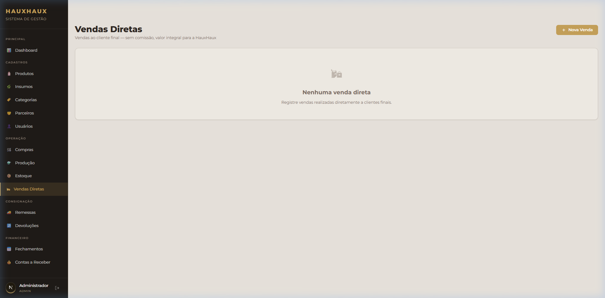
Figura 13 — Registro de vendas diretas
Como registrar uma venda direta
- Clique em "+ Nova Venda"
- Informe o Nome do Cliente (opcional)
- Adicione os Produtos ao pedido
- Para cada produto, ajuste a Quantidade e o Preço de Venda (o preço
padrão vem preenchido mas pode ser editado)
- Confirme a venda
Diferenças entre Venda Direta e Consignação
| Aspecto |
Venda Direta |
Consignação |
| Comissão |
Não tem (valor integral) |
% definido no cadastro do parceiro |
| Preço de venda |
Editável no momento da venda |
Fixo na remessa |
| Estoque |
Baixa imediata do estoque interno |
Transfere para estoque do parceiro |
| Financeiro |
Conta a receber com valor integral |
Conta a receber com valor de repasse (após comissão) |
A tela de Contas a Receber consolida todas as cobranças pendentes e recebidas. As contas são
geradas automaticamente a partir de fechamentos de consignação e vendas diretas.
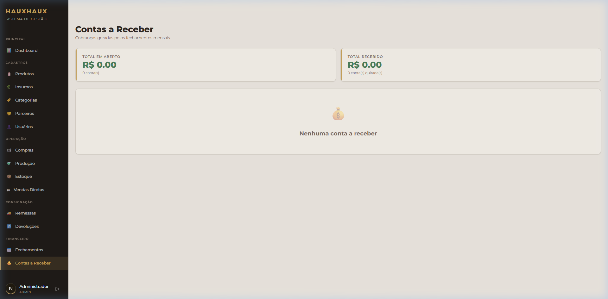
Figura 14 — Painel de Contas a Receber
Cards de Resumo
| Card |
Descrição |
| Total em Aberto |
Soma de todas as contas pendentes de recebimento (R$) |
| Total Recebido |
Soma de todas as contas já quitadas (R$) |
Como dar baixa em uma conta
- Localize a conta na lista
- Clique no botão "Receber" ou "Quitar"
- Confirme o recebimento do valor
As contas de consignação exibem o valor de repasse (já descontada a comissão
do parceiro). As contas de vendas diretas exibem o valor integral.
O Portal do Parceiro é a área exclusiva para os parceiros de consignação. Ao fazer login com
suas credenciais de parceiro, o sistema exibe um painel simplificado com informações relevantes sobre o
estoque consignado, vendas e declarações de consumo.
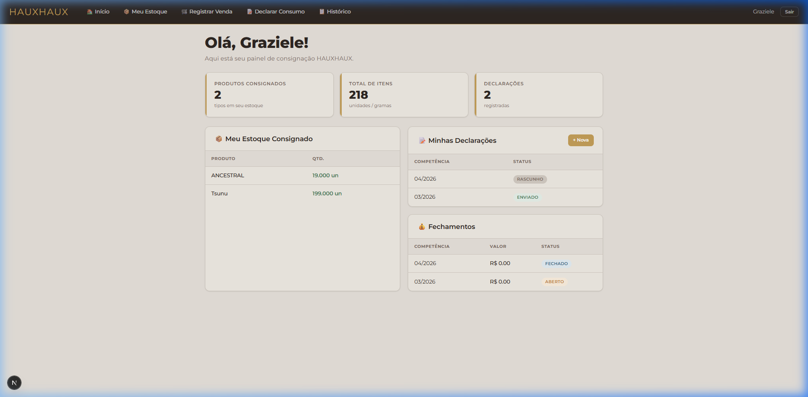
Figura 15 — Painel inicial do Portal do Parceiro
Barra de Navegação
O portal possui uma barra de navegação horizontal no topo com os seguintes itens:
| Item |
Função |
| 🏠 Início |
Retorna ao painel principal |
| 📦 Meu Estoque |
Visualiza os produtos em consignação |
| 🛒 Registrar Venda |
Registra vendas realizadas pelo parceiro |
| 📋 Declarar Consumo |
Declara o consumo mensal de produtos |
| 📜 Histórico |
Consulta o histórico de fechamentos, declarações e remessas |
Cards do Painel
- Produtos Consignados: Quantidade de tipos de produtos que o parceiro tem em estoque
- Total de Itens: Soma total de unidades/gramas de todos os produtos em consignação
- Declarações: Número de declarações de consumo registradas
Seções do Painel
- 🧴 Meu Estoque Consignado: Lista os produtos com suas quantidades atuais
- 📋 Minhas Declarações: Mostra as declarações de consumo com status (RASCUNHO ou
ENVIADO)
- 💰 Fechamentos: Exibe os fechamentos mensais com valor e status (ABERTO ou FECHADO)
O parceiro pode acompanhar em tempo real o saldo de produtos em consignação e o status dos
fechamentos diretamente pelo portal.
A tela "Registrar Venda" permite ao parceiro informar cada venda realizada do estoque
consignado. As vendas são acumuladas para o fechamento mensal.
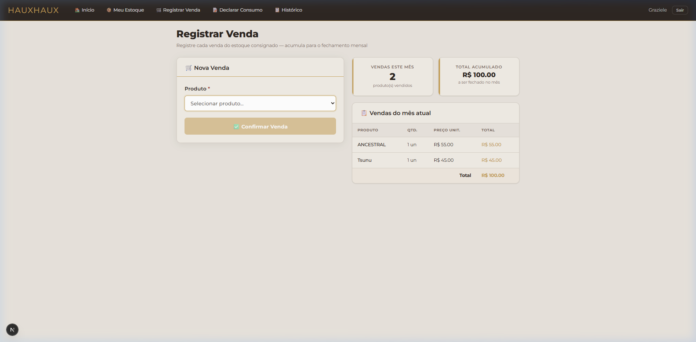
Figura 16 — Registrar venda no Portal do Parceiro
Como registrar uma venda
- Selecione o Produto vendido no campo "Produto"
- Informe a Quantidade vendida
- Clique em "✅ Confirmar Venda"
Informações exibidas
- Vendas Este Mês: Número total de produtos vendidos no mês atual
- Total Acumulado: Valor total em R$ das vendas do mês (a ser apurado no fechamento)
- Vendas do Mês Atual: Tabela detalhada com cada produto vendido, quantidade, preço
unitário e total
O preço unitário exibido é o preço fixo da remessa (definido pelo
administrador). O parceiro não pode alterar o preço de venda.
Após confirmar uma venda, ela não pode ser excluída pelo parceiro. Em caso de erro, entre
em contato com o administrador.
A tela "Declarar Consumo" permite ao parceiro informar mensalmente a quantidade de produtos
consumidos (vendidos ou utilizados). Esta declaração é usada como referência para o fechamento
mensal.
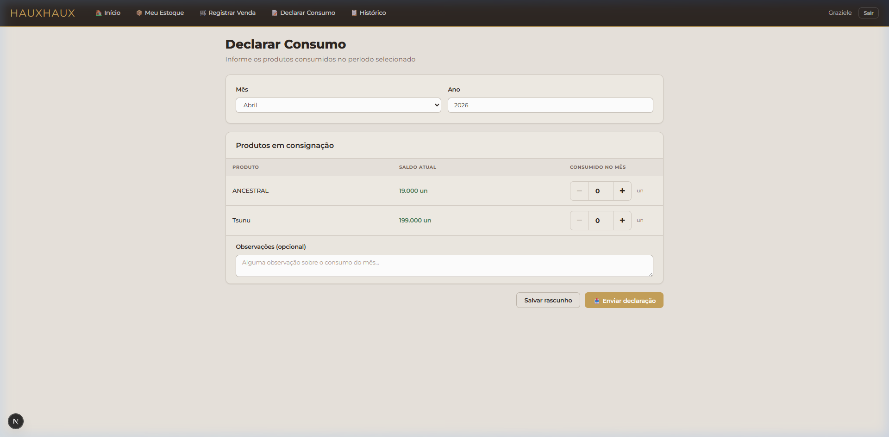
Figura 17 — Declaração de consumo mensal
Como declarar o consumo
- Selecione o Mês e Ano da competência
- Para cada produto listado, informe a quantidade consumida no mês (use os botões
+ e − ou digite diretamente)
- Adicione Observações se necessário (campo opcional)
- Clique em "Salvar rascunho" para salvar sem enviar
- Quando estiver tudo certo, clique em "📤 Enviar declaração" para enviar ao
administrador
Status da Declaração
| Status |
Significado |
| RASCUNHO |
Declaração salva mas NÃO enviada. Pode ser editada livremente |
| ENVIADO |
Declaração enviada ao administrador. Não pode mais ser editada |
Salve como rascunho ao longo do mês e envie a declaração final no último dia do período.
A tela de Histórico reúne todas as informações de movimentação do parceiro em um único
lugar: fechamentos, declarações de consumo, remessas recebidas e devoluções.
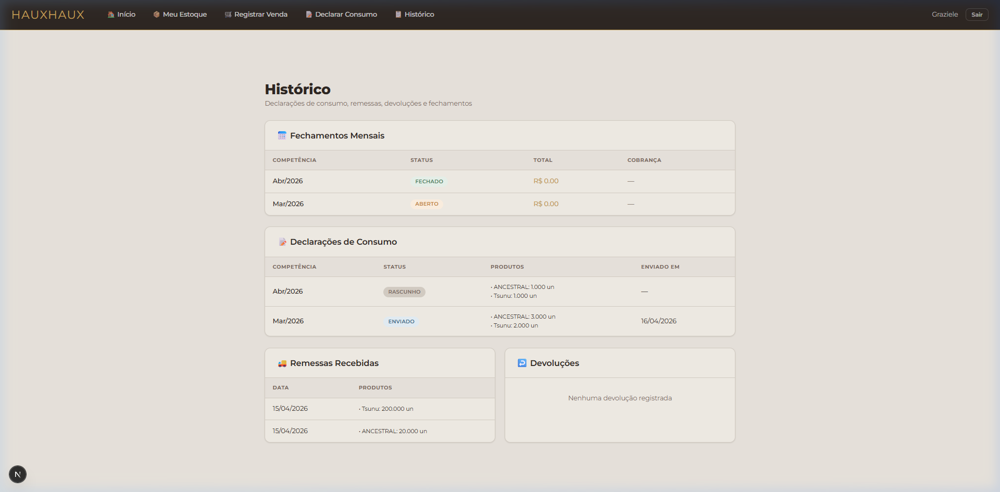
Figura 18 — Histórico completo do parceiro
Seções do Histórico
| Seção |
O que exibe |
| 📊 Fechamentos Mensais |
Competência, status (ABERTO/FECHADO), valor total e situação da cobrança |
| 📋 Declarações de Consumo |
Competência, status (RASCUNHO/ENVIADO), produtos declarados e data de envio |
| 🚚 Remessas Recebidas |
Data e produtos recebidos em consignação |
| 📥 Devoluções |
Registro de produtos devolvidos ao administrador |
O parceiro pode consultar o histórico a qualquer momento para acompanhar sua movimentação e
verificar valores pendentes.
Abaixo está o fluxo completo de operação do sistema, desde a compra de insumos até o recebimento financeiro:
Fluxo de Consignação
1. Compra de Insumos 📦
↓
2. Produção (Fabricação) 🔬
↓
3. Remessa para Parceiro 🚚
↓
4. Parceiro Vende os Produtos 🤝
↓
5. Fechamento Mensal 📋
(apura vendas, calcula comissão e repasse)
↓
6. Conta a Receber Gerada 💰
↓
7. Recebimento do Valor 💵
Fluxo de Venda Direta
1. Compra de Insumos 📦
↓
2. Produção (Fabricação) 🔬
↓
3. Venda Direta ao Cliente 🛒
(baixa imediata do estoque, valor integral)
↓
4. Conta a Receber Gerada 💰
↓
5. Recebimento do Valor 💵
Resumo de Ações por Módulo
| Módulo |
Ação Principal |
Resultado |
| Compras |
Registrar compra de insumos |
+ Estoque de insumos |
| Produção |
Registrar lote e confirmar |
+ Estoque de produtos |
| Remessas |
Enviar produtos ao parceiro |
− Estoque interno, + Estoque parceiro |
| Devoluções |
Receber produtos devolvidos |
+ Estoque interno, − Estoque parceiro |
| Fechamentos |
Apurar vendas do parceiro |
Gera conta a receber com valor de repasse |
| Vendas Diretas |
Vender para cliente final |
− Estoque interno, gera conta a receber integral |
| Contas a Receber |
Quitar pagamento recebido |
Atualiza status para "Recebido" |
Mantenha o hábito de fazer fechamentos mensais com os parceiros para ter um controle financeiro
sempre atualizado.